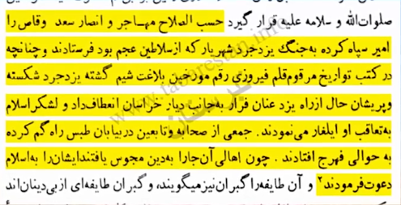
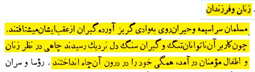

جواب
محمد مفید بافقی مشهور به مستوفی بافقی مورخ و نویسنده ایرانی در قرن یازدهم...
در کتاب جامع مفیدی میگه مسلمانان سپاهی را به فرماندهی سعد ابن ابی وقاص
برای مقابله با یزگرد سوم پادشاه ساسانی فرستادن
یزدگرد شکست خورد و به سمت خراسان فرار کرد...
درحالی که سپاه اسلام او را تعقیب میکردند، گروهی از مسلمانان در بیابان طبس مسیرشان را گم کردند و به فهرج رسیدند...
مردم این منطقه زرتشتی بودند و مسلمانان آنها را به اسلام دعوت کردند
زرتشتیان فهرج مهلت خواستند تا با قبایل و دوستانشان مشورت کنند

اما در حقیقت قصد توطئه و جنگ داشتند

آخر شب که شد زرتشتیان به مسلمانان شبیخون زدند...
و آنها را بیرحمانه کشتند...
در این درگیری تمام مردان مسلمان کشته شدند

و زنان و کودکان مسلمان که جان سالم به در برده بودند وحشتزده فرار کردند...
اما زرتشتیان به تعقیب آنها پرداختند...
وقتی دیدند دیگر راه فراری باقی نمانده، زنان و کودکان مسلمان چاهی را دیدند...
و برای اینکه اسیر دشمن نشوند خودشان را به داخل چاه انداختند
اما درباره چاه چهل دختران فهرج باید بگیم...
این قضیه از جهت تاریخی کاملاً خلاف آن چیزی است که ادعا میشود...
هیچ سند تاریخی حتی یک روایت درباره دختران زرتشتی که خودشان را در این چاه انداخته باشند وجود ندارد...
در حقیقت این چاه محل شهادت زنان و دختران مسلمانی است که به دست زرتشتیان قتلعام شدند...
ماجرای چاه چهل دختران فهرج یادآور یکی از حوادث تلخ تاریخ است...
که در آن زنان و دختران مسلمان برای حفظ ایمان و عزت خود، مرگ را به اسارت و تجاوز ترجیح دادند...
با وجود تمام جنایتهایی که زرتشتیان در حق مسلمانان داشتند، سپاه اسلام با گذشت و مهربانی...
بدون گرفتن انتقام و ریختن قطره خونی آنها را بخشید...
این رفتار جلوهای از رحمت، عدالت و اخلاق والای اسلامی را به نمایش گذاشت و باعث شد مردم فهرج و یزد اسلام را با جان و دلشان قبول کنند!
نکات تکمیلی
- جمعبندی تاریخی: ماجرای چاه چهل دختران فهرج روایت دقیقی از تاریخ نیست؛ منابع معتبر نشان میدهند این چاه محل شهادت زنان و دختران مسلمان بوده است، نه اینکه خودشان را برای فرار از اسارت به چاه انداخته باشند.
- درک درست منابع: بررسی منابع تاریخی معتبر و مستند اهمیت دارد؛ داستانهای عامیانه یا روایات غیرمعتبر میتوانند حقیقت تاریخی را تحریف کنند. تحلیل دقیق منابع باعث میشود قضاوت ما نسبت به گذشته منصفانه و دقیق باشد.
- پیام اخلاقی و انسانی: با وجود خشونت و جنایتهایی که رخ داده، رفتار مسلمانان با گذشت و مهربانی بعد از حادثه جلوهای از عدالت، اخلاق و رحمت اسلامی را نشان میدهد و درس بزرگی برای نسلهای بعدی است.
- الهام برای امروز: وفاداری به ایمان، شجاعت در شرایط سخت و حفظ اخلاق حتی در مواجهه با دشمنان، نمونهای است که میتواند امروز هم به عنوان الگو برای رفتار انسانی و اجتماعی مورد استفاده قرار گیرد.